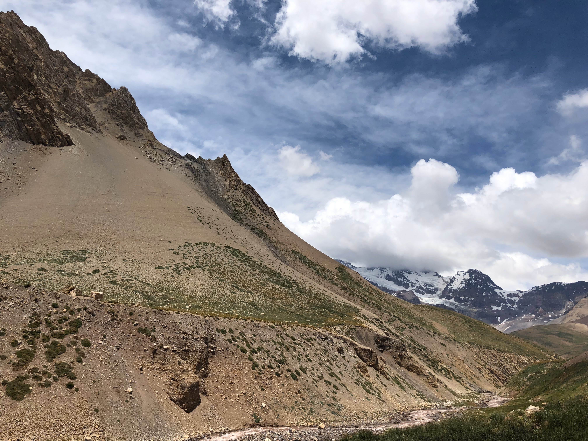
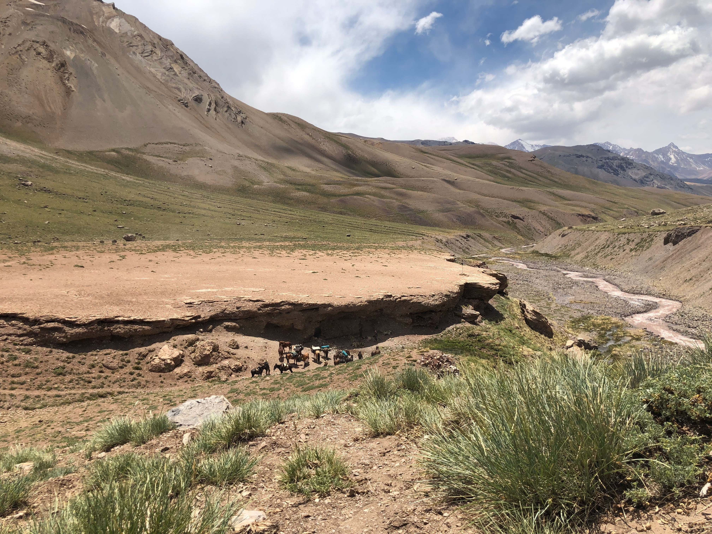

Día 1
Manzano Histórico
Recepción en el aeropuerto y terminales de ómnibus de Mendoza capital y Tunuyán. Las pasajeras deberán de llegar entre las 08.00 a 14.00 horas a estos puntos. Puede ser que lleguen al manzano por su cuenta. 14.00 hs traslado: aeropuerto/ terminal / manzano Histórico. Sale: 14.30 llega 16.30 hs.

Recepción en el Campamento El Origen Manzano Histórico, bienvenida por el personal guías y coordinadoras, recepción mesa de merienda, por la noche fogón empanadas y pastelitos de batata y membrillo. Fin de día y actividades.
Día 2
Campamento "El Orígen" - Scaravelli
El día comienza a las 8 hs con el desayuno, damos comienzo a la expedición con todos sus actores, guías y coordinadoras.
Charla de coordinación y ajustes, seguido las invitamos a una caminata guiada por los puntos de interés de la comuna: el paso Histórico del General San Martín por el Manzano Histórico, visita al museo de Ciencias Naturales regional, monumento al General San Martín llamado “Retorno a la Patria”.
También recibirán una reseña histórica del paso El Portillo, la Campaña de los Andes y sus pasos, el Cristo de la Hermandad y la Plaza de Artesanos.

Al término de esta actividad se alistarán para salir con destino a Scaravelli. 11.30 hs. Transfer manzano histórico/Puesto de Gendarmería Sale 11.30 hs., donde presentaremos la documentación y daremos aviso de paso.
Terminado el trámite se entregarán las viandas, luego toman los caballos asignados para salir con destino a Scaravelli 16.00 hs. Llegada a Scaravelli bienvenida mesa merienda buffet, asignación de lugares en el refugio para pasar la noche cena liviana y Fin de los servicios.
Día 3
Scaravelli- Portillo - Real de la Cruz
07.30 La actividad de este día comienza bien temprano con el amanecer. Al despertar deberán alistar sus pertenencias y equipos, presentación de la carga, desayunamos en el refugio.
Antes de salir un repaso físico y médico, una introducción sobre la expedición, sus cuidados y la seguridad. Asignación de los caballos y monturas, 09.00 hs. comienzo de la cabalgata con destino al Portillo Argentino a 4380 msnm. Yareta, Portillo Argentino.
Al llegar realizaremos una breve parada para apreciar este punto frontal de la cordillera, tendrán tiempo para sacar fotos, revisamos las cinchas de la montura y a la voz del guía montaremos y daremos comienzo al empinado y zigzagueante descenso que nos llevará hasta El Real de la Cruz.

Una jornada exigente en todos los aspectos, la vista es imponente y gratificante, cumplido el objetivo. Llegamos al refugio Real de la Cruz donde dispondrán de las instalaciones.
Asignación de los lugares para dormir. Reponemos energía con una rica cena.
Día 4
Real de la Cruz - Portillo Chilena, Paso Piuquenes
Este día es relajado, al despertar las espera un buen desayuno, tiempo para charlar y a la 11 hs salida en modalidad de trekking hasta la laguna del Real y costeando el río Tunuyán,

En la laguna las esperamos con una picada, bebidas y frutas, tendrán unas horas para descansar charlar o recorrer los alrededores, a las 16 hs regresar al real, prepara las duchas, tarde libre, cena y fin del día.
Día 5
El Caletón – Real de la Cruz
Este día comienza temprano 07.00 hs., luego de alistar nuestras pertenencias, equipo y carga se servirá el desayuno una charla del día por venir, la seguridad y las dificultades del camino,
Salida 09.30 hs, cruzaremos el caudaloso río Tunuyán. Nos dirigimos a caballo hasta llegar al portillo chileno 13.00 hs.

Tiempo para disfrutar de fotos y paisajes, tentempié y espumante para brindar, 14.30 hs regreso con destino al Caletón
16.00hs, recepción snack, tarde libre, cena con fogón y fin del día. Se duerme a la intemperie.
Día 6
Real de la Cruz - Scaravelli
El día comienza más tarde 08.30 hs para disfrutar del desayuno, alistamos las pertenencias

Saldrán 10.00 hs con destino al real de la cruz, llegada tarde libre, ducha y cena. Fin de los servicios.
Día 7
Scaravelli - Campamento "El Origen" - Manzano Histórico
Este día comienza temprano 07.00 hs, alistaremos el equipaje y carga, al finalizar tomaremos el desayuno, una charla informativa para el regreso, entrega de las viandas, salida 09.00 hs,
El regreso en un viaje único pasando por el Real de la Olla un lugar maravilloso, el camino hasta el portillo es exigente.

Luego de cruzarlo el camino es cuesta abajo hasta llegar al puesto de Gendarmería, a la llegada un transfer las llevará al campamento Mawiza Zomo.
Habrá tiempo libre para bañarse, cambiarse, alistar el equipaje y preparase para la noche, un fogón convoca una reunión de unión y hermandad junto a una rica cena, vinos y bebidas para mantener viva la tradición, un evento inolvidable
También podrán participar en Mawiza Zomo, el espacio para la mujer donde habrá una bienvenida y entrega de menciones. Un cierre emocional. Fin de día y actividades.
Día 8
Manzano Histórico
Desayuno de despedida, Alrededor del mediodía traslado al aeropuerto o terminal de bus. Fin de los servicios del cruce y programa.

Tarifas
Mawiza Zomo Cabalgata:
ARS 95.000 No incluye imp.
Mawiza Zomo Trekking:
ARS 80.000 No incluye imp.
Vigencia: de Diciembre del 2021 a Abril del 2022. Las tarifas pueden sufrir cambios sin previo aviso. Las tarifas aplican para las salidas de enero/febrero/marzo: no aplica para períodos de navidad, año nuevo
Pago en cuotas con tarjeta: Ahora 6 – 12 – 18
- 6 pagos de $ 18.500
- 12 pagos de $ 9750
- 18 pagos de $ 6778
Alimentos detallados para todo el viaje
Desayuno
- Pan casero
- Galletas caseras
- Mermeladas caseras
- Dulce de leche casero
- Manteca
- Frutas de estación
- Frutos secos
- Cereales
- Mate, café, leche, té y jugos
Almuerzo
- Sandwiches
- Pan casero, milanesa de carne, pollo, atún y fiambres
- Frutas de estación
- Cereales
- Frutos secos
- Golosinas
- Chocolates
- Jugos y agua
Cena
- Carne Asada
- Carne a la cacerola
- Guisados
- Pastas
- Vegetales asados
- Ensaladas
- Pan casero
- Quesos y fiambres
- Frutas de estación
- Chocolates
- Vinos, jugos y agua